From pay later to an everyday credit card
I led design as Flex became a credit card. The new direction landed in five months, then shipped in phases.
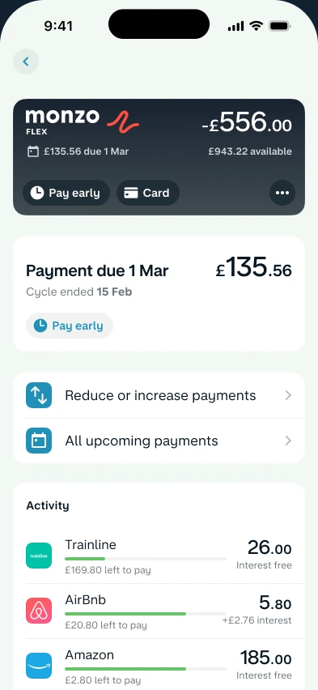
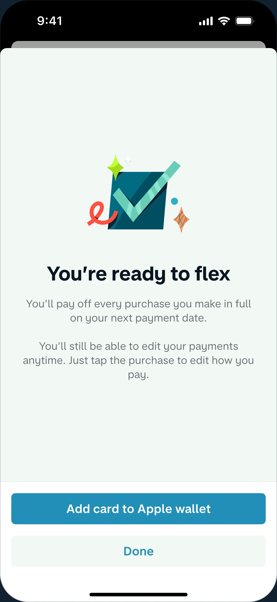
By early 2023, Flex was 15% behind its customer goal
A hybrid of buy now, pay later and a credit card: a limit, and a plan for every purchase
by the end of 2023
average spend per customer, per month
Move Flex to Monzo’s new app framework. A full redesign.
The product said “pay later”. Customers already used credit cards.
used credit cards
used buy now, pay later
already knew Flex
Survey of 1,924 eligible customers who had never tried Flex
Positioning Flex as a credit card would bring in more customers.
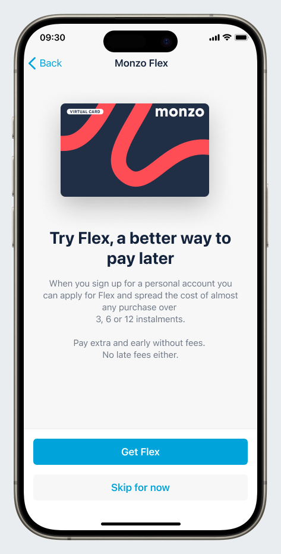
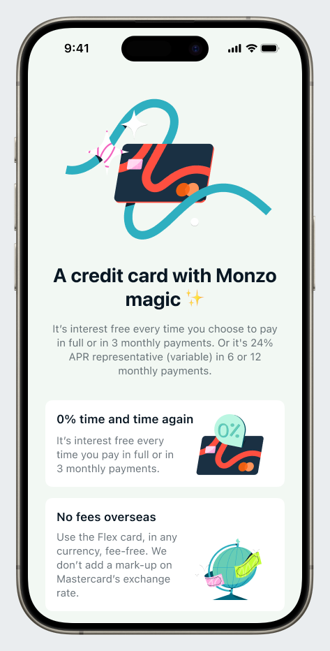
A travel message got more applications. A credit card message got more customers.
More people started
More people finished
We chose credit card. Interest isn’t customers.
It even worked better with customers we had identified as travellers.
accounts against our best previous message, sent to 870k customers
In-app experiments against control: new copy and an intro screen at Flex entry points
New words weren’t enough. A credit card has to behave like one.
of customers had more than 10 active purchases. To change what they paid each month, they opened every purchase, one by one.
“Pay off extra” looked like paying the balance. It paid one purchase.
- 1See the whole account, not each instalment
- 2Pay the balance in one go
- 3Change what they pay each month
- 4Set a default for card paymentsChoosing a plan for every coffee was painful
- 5Later: balance transfers, holds, joint accounts, rewards
A credit card with full visibility and control
The card leads the experience, and you can use it every day
One view of the account
Played back the research with the team, then shared ideas early to align.
We couldn’t agree what to build first
Scored on vision fit, business impact and effort. 1: the new framework. 2: card defaults. 3: payments.
Structure clear, payments confusing
The screen tried to do too much. I took out what we wouldn’t build yet, like insights and rewards.
completed the payment tasks without help, in a task-based usability test.
One balance. A clearer starting point.
- 1Balance, left to spend and next payment
- 2Pay early, pay extra or clear it all
- 3Recent purchasesEach breakdown moved to a second screen
- 4How much of the limit is usedFor people watching their credit score
I convinced the team to ship limit utilisation in v1: 26% more people asked for a higher limit.
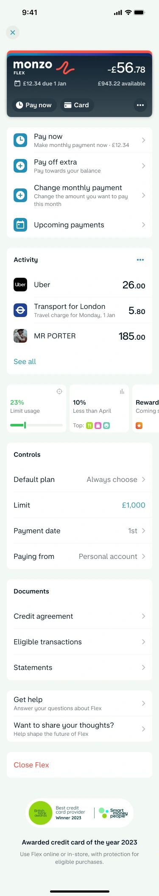
The account · one view

Monzo home · the card leads
In credit, less friction isn’t always better.
See what’s left and the interest you save.
An extra payment doesn’t always lower the next one. The flow says so first.
Editing the monthly amount needed a new allocation algorithm. The clearer account went first.
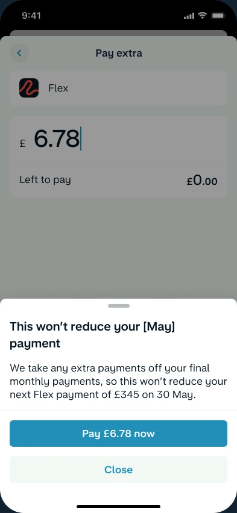
Pay extra · the pause
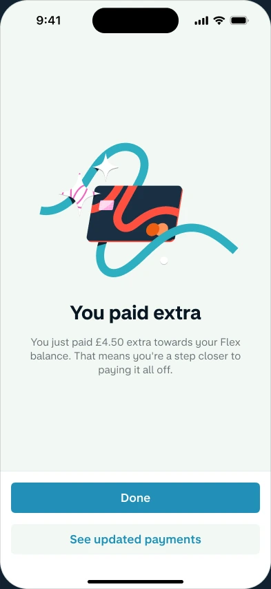
Done · one step closer
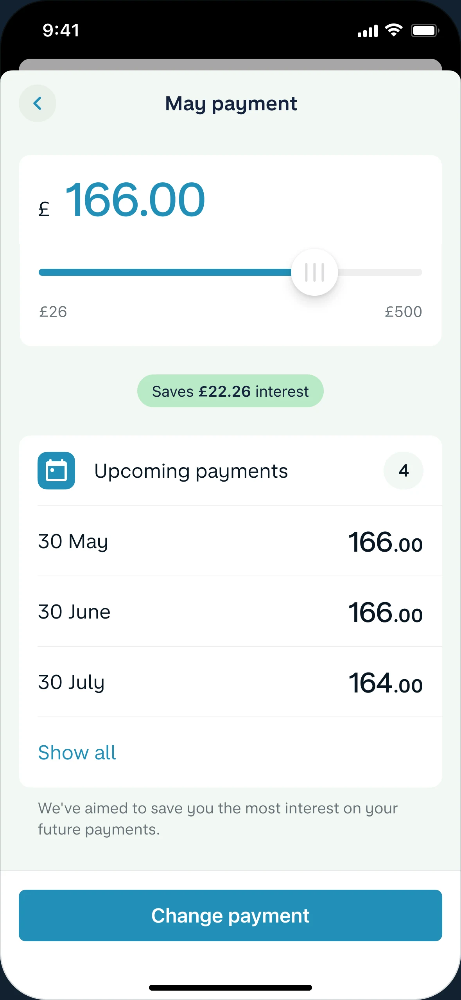
Monthly payment · see the effect
Choose once, not for every coffee
Card defaults: pay in full, the minimum, or still choose every time
Pay in 3 or 6 couldn’t be a default: it was a revenue risk
Default set · pay in full on your payment date
One screen. Every financial situation.
A credit product can’t show everyone the same thing
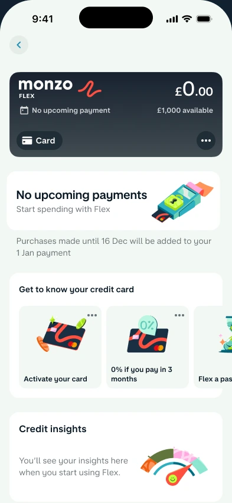
Not used yet
Spending
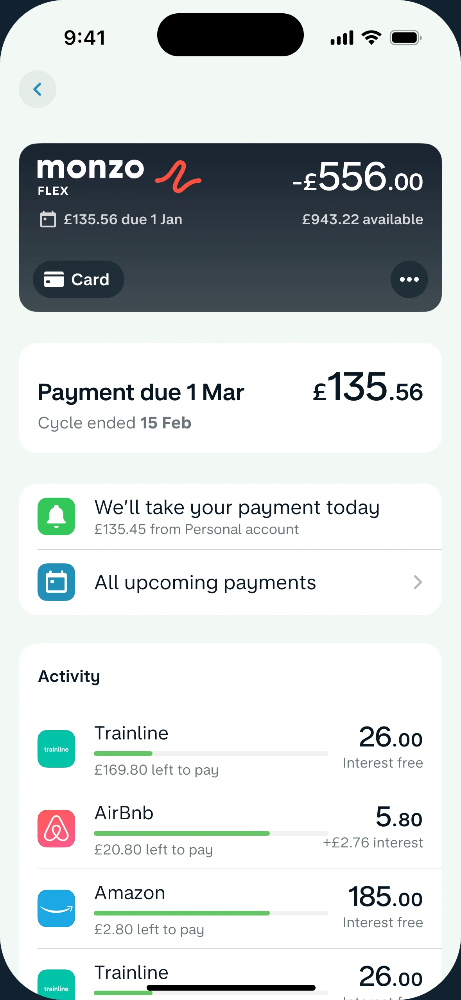
Payment due
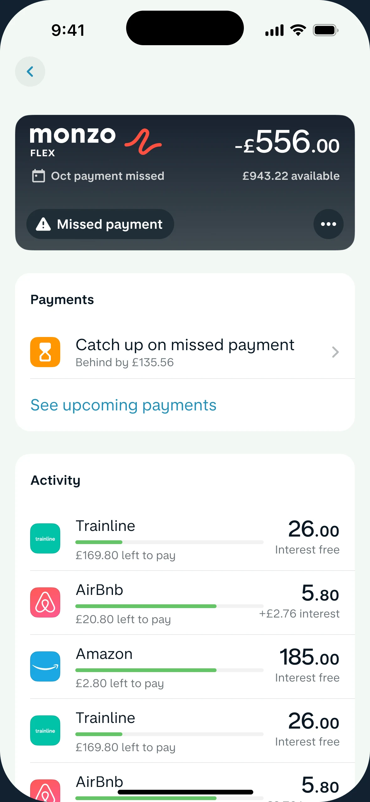
Missed payment
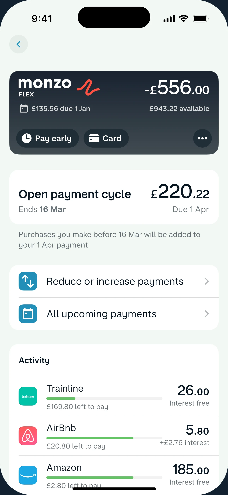
Payment made
A credit card that won awards
retention
customers missing payments
payment complaints
people increasing their limit
average spend
NPS
support contacts
balances by Mar 2025, from £169m when I joined · annual reports
What I learned
Interest isn’t customers
Measure who finishes, not who starts. Travel won the clicks and lost the accounts.
In credit, friction can be care
The pause before an extra payment saves people from a surprise.
Bring risk in on day one
Our hardest calls weren’t only design. Next time, business and risk join the first workshop, and success means people staying on top of payments.
What came next: money transfers, and limit changes that never feel like a surprise